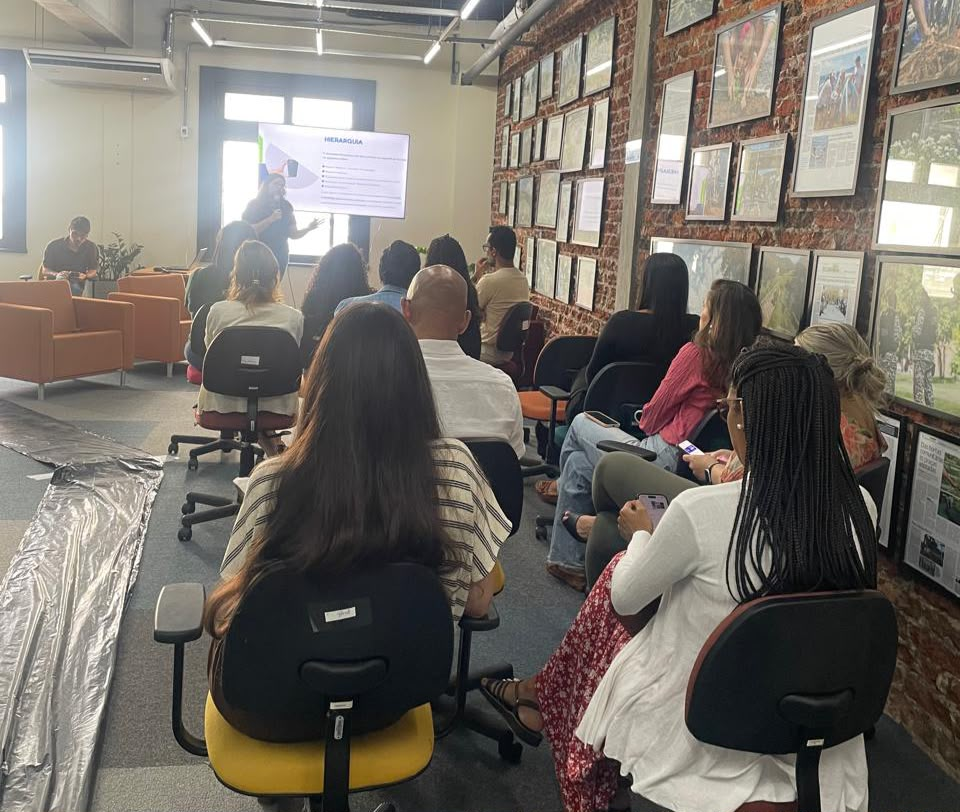
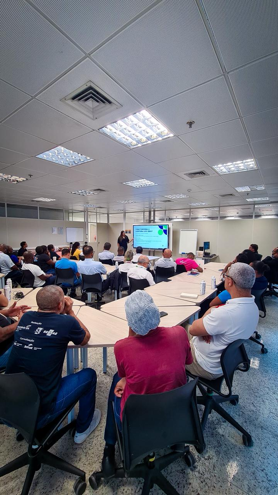
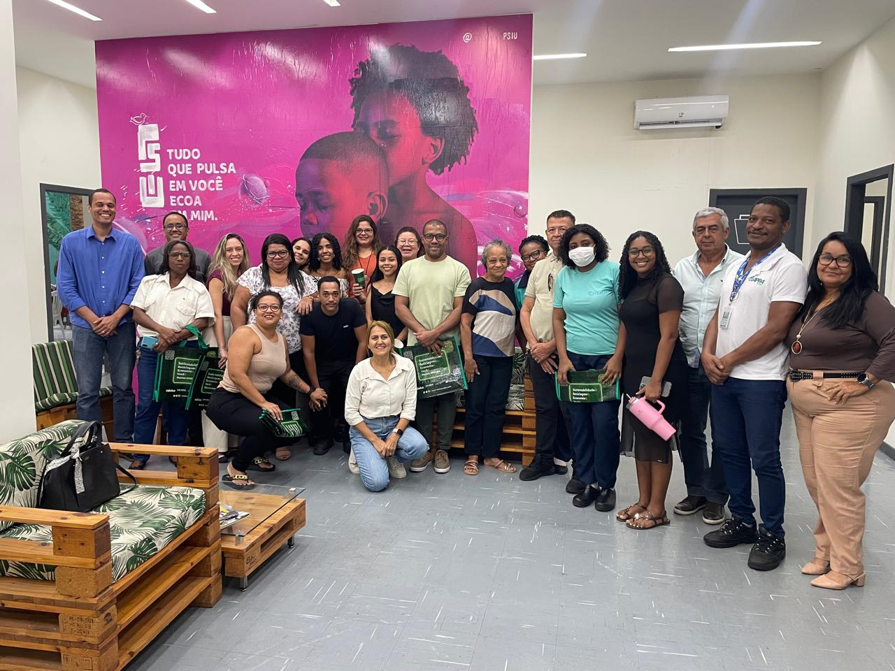
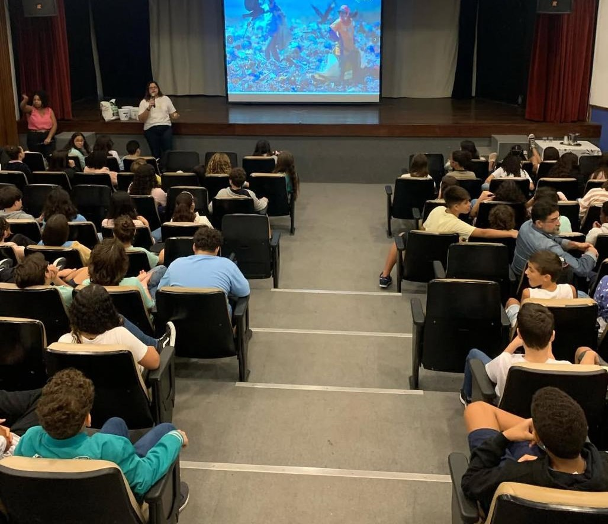
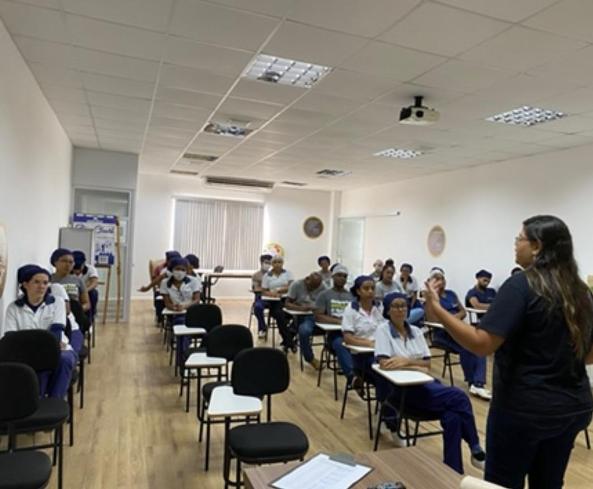
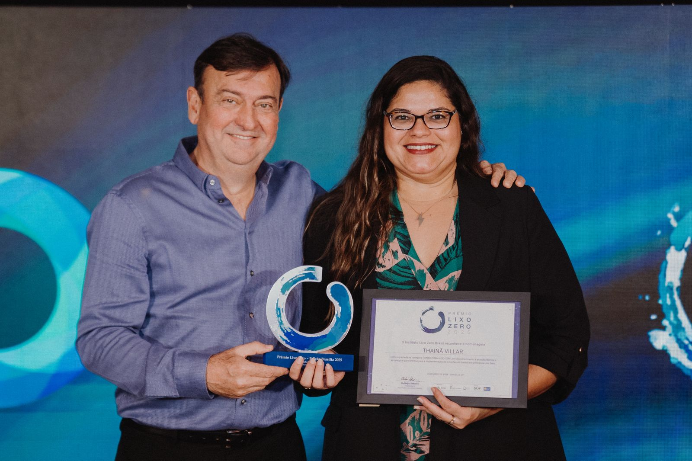

Recursos desperdiçados
Materiais que poderiam ser reaproveitados, reciclados ou valorizados acabam sendo descartados em aterros sanitários.
Gestão de resíduos para empresas que querem aproveitar melhor seus recursos, fortalecer sua responsabilidade ambiental e transformar sustentabilidade em resultados.
Quero transformar minha empresa Conversa inicial e sem compromisso.Estudos apontam
Quando não existe controle sobre o que é gerado e descartado, a empresa pode perder materiais de valor, aumentar seus custos de destinação e se expor a riscos ambientais.
Materiais que poderiam ser reaproveitados, reciclados ou valorizados acabam sendo descartados em aterros sanitários.
Falhas no armazenamento, transporte ou destinação podem gerar problemas de conformidade ambiental.
Quanto maior o volume descartado, maiores podem ser os gastos com coleta, transporte e destinação.
Sem dados sobre seus resíduos, fica mais difícil identificar desperdícios, estabelecer metas e tomar decisões.
Resíduo também é recurso
Uma boa gestão permite saber o que é gerado, quanto é gerado e para onde vai. Com essas informações, resíduos deixam de ser apenas uma questão de descarte e passam a fazer parte da estratégia da empresa.
Nossa consultoria
A Villar estrutura uma estratégia Lixo Zero de acordo com a realidade da sua operação. Identificamos oportunidades, organizamos processos, envolvemos pessoas e acompanhamos a evolução dos resultados.
Quero entender minha operaçãoRealizamos uma análise completa da operação para entender como os resíduos são gerados, separados e destinados.
Transformamos o diagnóstico em ações práticas, definindo soluções viáveis e adequadas à realidade da organização.
Preparamos e envolvemos as pessoas para que as novas práticas sejam compreendidas e incorporadas à rotina da organização.
Acompanhamos a evolução dos resultados para avaliar o desempenho das ações implementadas e identificar oportunidades de melhoria contínua.
Preparamos e acompanhamos a organização durante o processo de certificação, garantindo que as informações e evidências necessárias estejam devidamente estruturadas.
Para quem é a Consultoria Lixo Zero?
A estratégia Lixo Zero pode ser aplicada em organizações de diferentes setores, portes e níveis de maturidade ambiental.
Gestão de resíduos, redução de desperdícios e organização de processos no ambiente corporativo.
Mapeamento de resíduos, otimização de recursos e melhoria dos fluxos de armazenamento e destinação.
Educação ambiental, mobilização da comunidade acadêmica e implantação de práticas sustentáveis.
Estruturação de processos, indicadores ambientais e melhoria da gestão de resíduos.
Planejamento, orientação de equipes e gestão dos resíduos gerados antes, durante e após o evento.
Organização dos fluxos de resíduos, envolvimento de lojistas e acompanhamento de indicadores.
Apoio à gestão responsável dos diferentes resíduos gerados, respeitando as exigências aplicáveis a cada categoria.
Diagnóstico, planejamento e acompanhamento de soluções para operações com volumes elevados de resíduos.
Experiência em campo
A transformação acontece quando processos e pessoas caminham juntos. Por isso, nossa atuação combina gestão, educação ambiental e acompanhamento próximo das organizações.






Reconhecimento nacional
Uma conquista que reconhece nossa atuação e compromisso com a construção de soluções Lixo Zero.
Para quem quer ir além
Responda o Formulário com as informações para entrarmos em contato